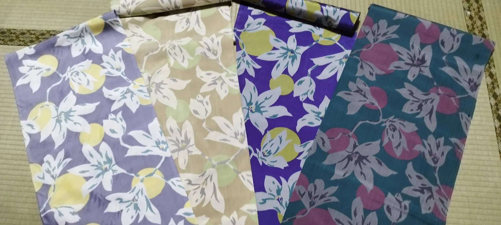
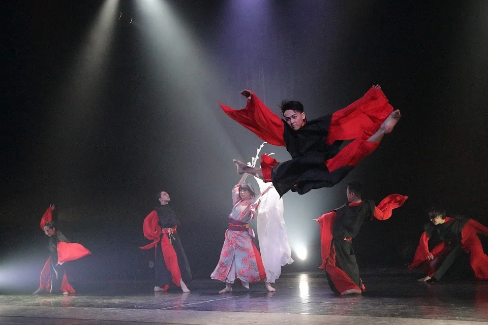
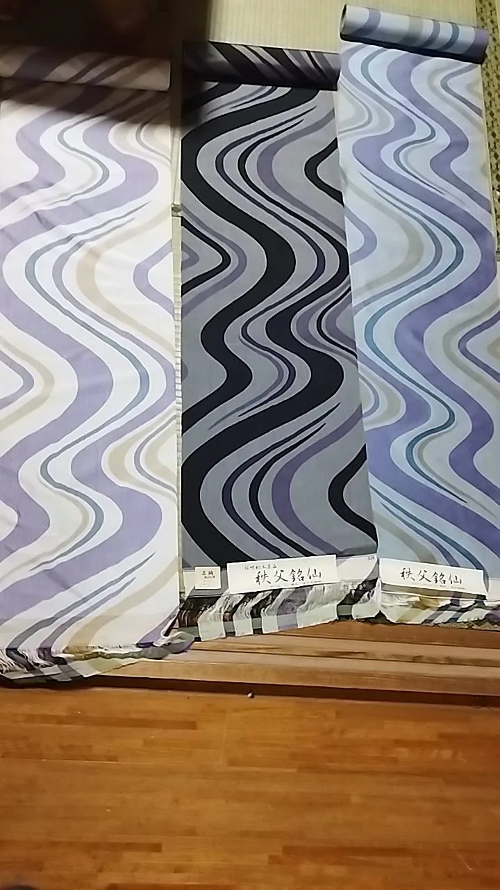
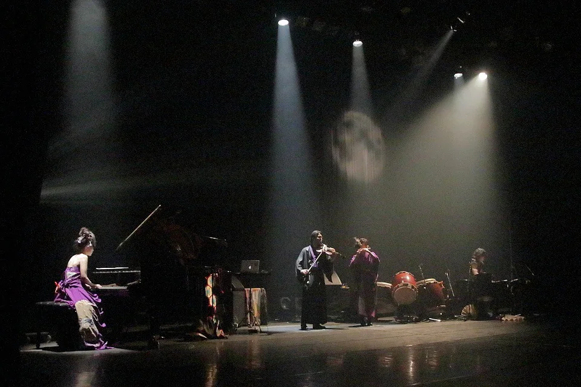

CHICHIBU ART CREATION 2027
眠れる感性が、
羽ばたき、
未来へ紡ぐ。
秩父の絹の文化から、新しい表現を。
まち全体が、ひとつの繭になる。
2027.11.6 Sat — 11.7 Sun
秩父宮記念市民会館
秩父市歴史文化伝承館




ConceptFrom a thread, toward the future.
OPEN CALL秩父銘仙 反物デザイン公募2026.10.15 募集開始 →